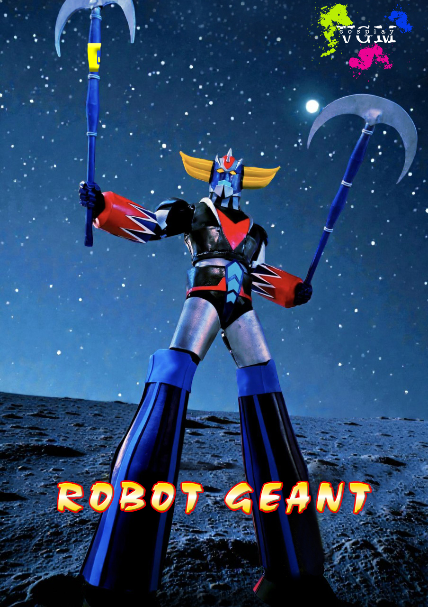
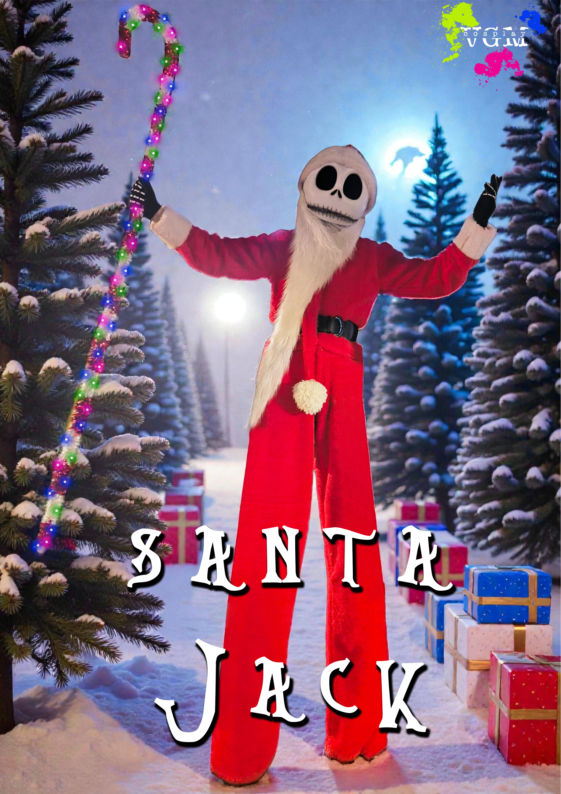
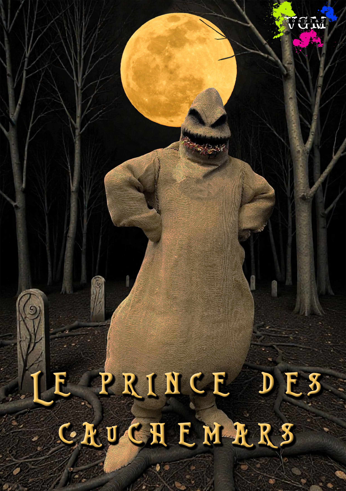
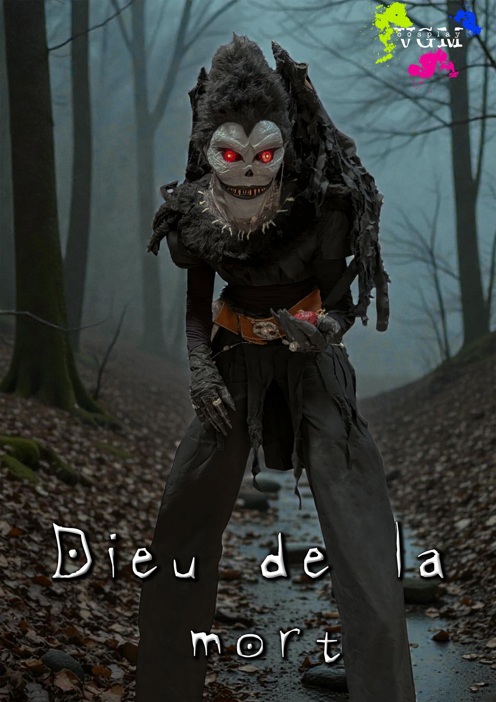
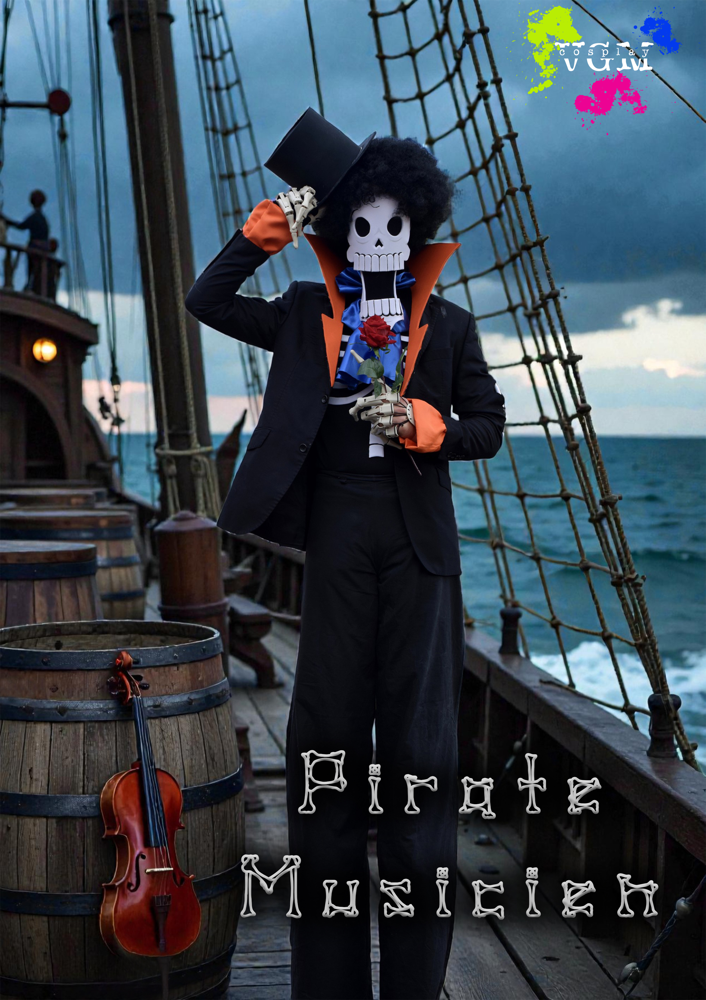
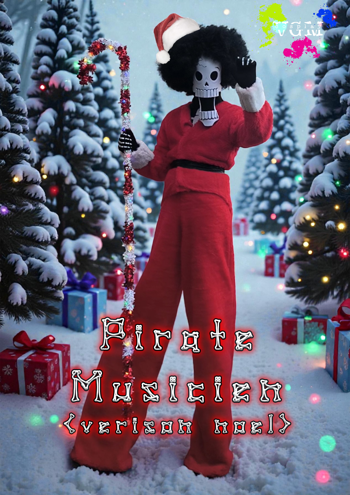
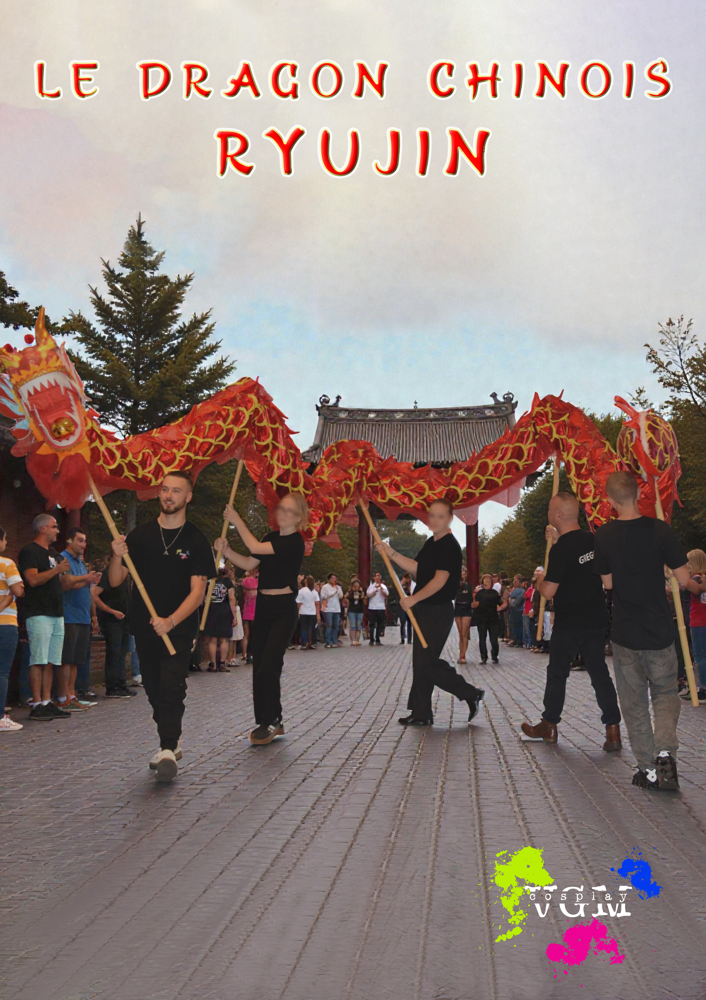
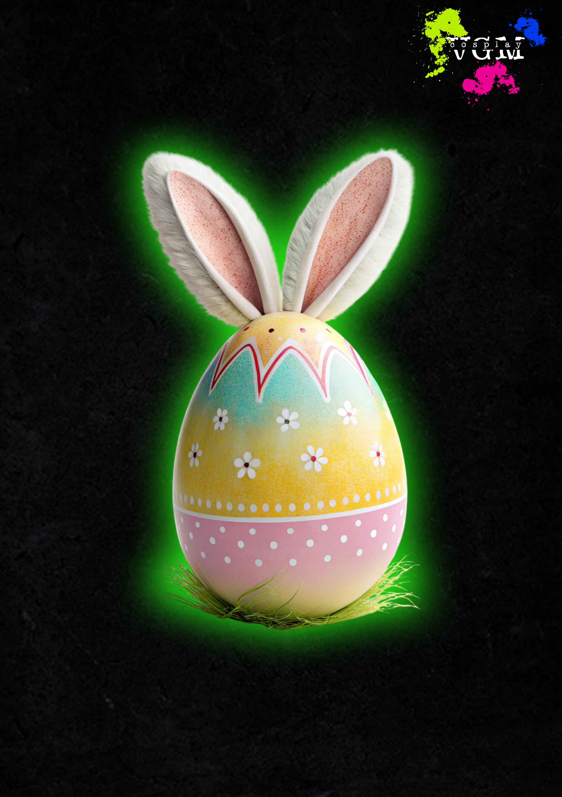

Nos Costumes
Découvrez notre collection de costumes uniques et spectaculaires, conçus pour émerveiller petits et grands.
Chaque personnage est minutieusement réalisé pour offrir un visuel impressionnant et une présence scénique mémorable lors de vos événements.

DEMANDÉ
Robot Géant
Gardien métallique venu des étoiles, ce robot géant incarne force et protection. Imposant mais accessible, il impressionne toutes les générations grâce à son allure héroïque et son énergie inspirante.
 WOW !
WOW !
Le dévoreur de Monde
Colosse venu des confins de l'univers, ce personnage impose par son aura cosmique. Puissant mais toujours bienveillant avec le public, il ne laisse personne indifférent.
 DEMANDÉ
DEMANDÉ
Renard à neuf queues
Créature mystique venue des légendes d'Orient, ce renard à neuf queues fascine par son élégance et sa puissance. Un personnage visuellement spectaculaire, apprécié des enfants comme des adultes.
 FRISSON
FRISSON
Slenderman
« L'Homme Sans Visage » Silhouette élancée venue des ombres, Slenderman impressionne par sa grandeur et son silence, apprécié des enfants les plus courageux.
 DEMANDÉ
DEMANDÉ
Halloween Jack
Avec son sourire citrouille et son air espiègle, Halloween Jack incarne l'esprit malicieux d'octobre. Un personnage parfait pour des animations festives et amusantes.

FESTIF
Santa Jack
Version hivernale de Jack, Santa Jack apporte la magie de Noël.. sur échasses! Son style unique mélange féerie, élégance et une pointe d'humour.

FRISSON
Prince des Cauchemars
Majestueuse figure des nuits agitées, le Prince des Cauchemars règne sur un royaume où l'imaginaire prend vie. Impressionnant mais jamais effrayant, il apporte une ambiance mystérieuse et captivante, parfaite pour les événements à thème fantastique ou Halloween.

FRISSON
Dieu de la Mort
Figure majestueuse entre le monde des vivants et celui des esprits, ce personnage veille dans un silence solennel. Une présence forte, intrigante, mais toujours adaptée au tout public.

DRÔLE
Pirate musicien
Personnage à l'allure élégante et pleine de charme, ce pirate squelettique traverse les mers au rythme de sa musique entraînante. Drôle, surprenant et toujours prêt à divertir, il apporte une touche d'humour et de fantaisie à chaque événement.

FESTIF
Pirate musicien - Version Noël
Personnage à l’allure élégante et festive, ce pirate squelettique traverse l’hiver au rythme de ses mélodies enchantées. Entre humour, surprises et esprit de Noël, il amuse petits et grands avec son charme unique et sa fantaisie décalée, apportant une touche magique et chaleureuse à chaque événement.
 AMUSANT
AMUSANT
Bao – Lion chinois
Avec sa danse colorée et son énergie communicative, Bao apporte chance et joie là où il passe. Une animation vibrante, parfaite pour les événements festifs.

IMPOSANT
Ryujin – Dragon chinois
Symbole de puissance et de prospérité, Ryujin impressionne par sa prestance et ses mouvements ondulants. Un numéro lumineux et spectaculaire.

À VENIR
NOUVEAU COSTUME
Un costume est à venir pour les Pacques !
À VENIR
NOUVEAU COSTUME
Un costume est à venir pour la Saint Patrick !